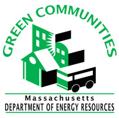

The Waltham Land Trust is a private, non-profit charitable organization that aims to create a legacy of land conservation in Waltham by promoting, protecting, restoring, and acquiring open space. The Land Trust envisions growth in public appreciation of natural resources, preservation and restoration of native habitat, and increased biodiversity to foster a healthier environment.
Waltham has joined the list of 25 communities that have been designated as part of the "Green Community" program by the Department of Energy Resources. Along with this designation, the city of Waltham has been awarded a grant of $281,080 to be used in further improving Waltham's environment by implementing energy efficiency and renewable energy programs. In order to be considered for the Green Community Designation grant, a municipality has to meet five specified criteria and submit a project application proposing how these funds will be spent.
Click here to learn more.The Waltham Green Project